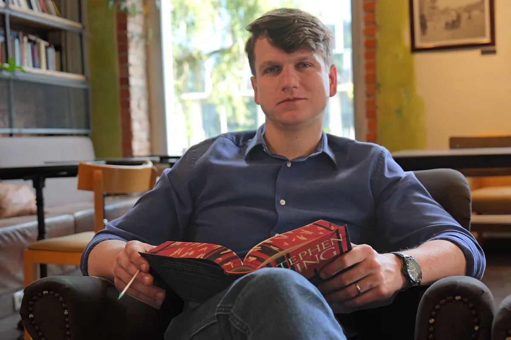

Rozrusznik czytania
pierwsze 15 minut ze mną

Dowiedz się więcej
W pierwszych 15 minutach ze mną przejdziesz kompletną metodę, która pozwala czytać 2 razy szybciej bez utraty zrozumienia. Zmienisz swoje podejście do czytania dzięki wykorzystaniu prostych technik takich jak wskaźnik czy metoda fotograficzna.